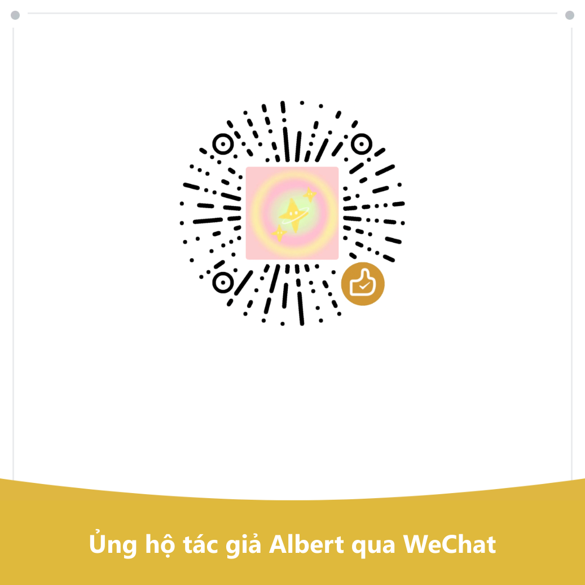

每一条都回答两个问题：花掉什么，换回什么。
换回的算在谁头上也分档：你自己最高，其次配偶和直系亲属，再次朋友同事，陌生人最低——最低不等于零，只是回报的指望小、要连风险一起看。
Đừng làm hết mọi thứ: Đây là danh sách các lựa chọn sao lưu được sắp xếp theo hiệu quả chi phí, không phải danh sách nhiệm vụ. Chọn một hoặc hai mục và đếm; kiểm tra phần còn lại khi cần—nếu bạn muốn tiết kiệm công sức, chọn "Chi tiêu" và "Không trả tiền" bên trái, "Cần kiên trì" và chọn "Không", và các mục còn lại đều giống nhau. Chính tác giả không làm phần lớn việc này. Bạn có thể nhấp vào dấu gạch ngang "mục X" trong văn bản chính và xem ngay nội dung, không cần phải tự lật qua
nhấp chuột hoặc di chuột qua các từ đứt. Bảng đầy đủ như sau

Quét bằng WeChat—dù bạn có cho hay không, nó không ảnh hưởng đến bất kỳ nội dung nào.
Nếu bạn xem trên điện thoại, hãy chụp màn hình trước, sau đó dùng WeChat để quét và chọn hình ảnh từ album của bạn